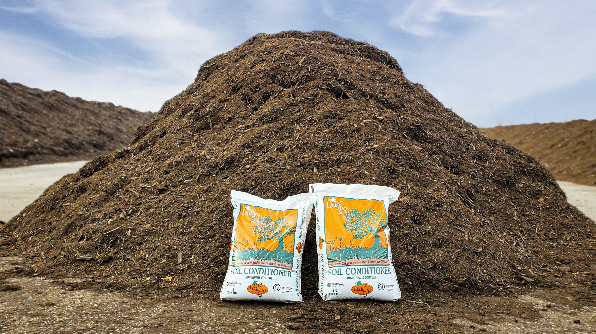
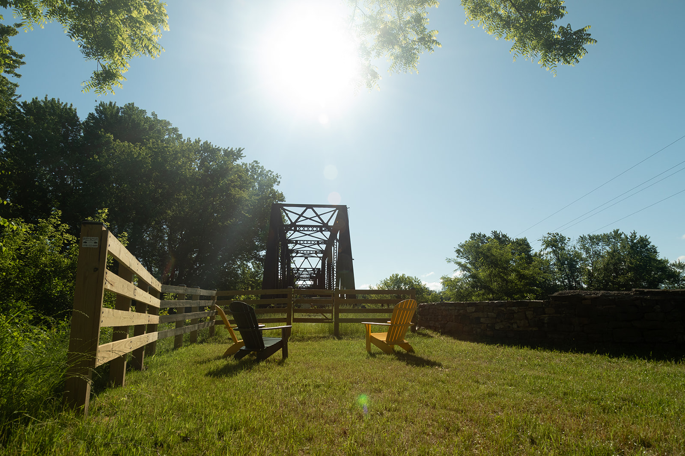

Sustainability & Systems
Connecting systems
to real people.
I work at the intersection of environmental systems and public communication, helping technical realities reach the communities they affect most.
Where systems
meet communities.
Much of my sustainability work lives in the gap between how environmental programs are designed and how the public actually experiences them.
Composting systems, exhibitions, trail infrastructure, and environmental campaigns all exist at the boundary between technical planning and lived community life.
My role in these projects is translation: understanding the technical reality deeply enough to communicate it clearly and understanding the audience well enough to make it land emotionally.
Clarity is equity
When environmental information is inaccessible, the people most affected by environmental decisions are the ones excluded from them.
Community before campaign
Effective sustainability communication begins with listening, not messaging.
Systems thinking, human scale
Environmental systems are complex. My work is about translating that complexity into something a real person can understand and act on.

Leafgro Campaign
Developed public-facing campaign materials for Maryland Environmental Service’s Leafgro composting initiative, translating county-level biosolid recycling systems into accessible and community-relevant messaging.

Community Trail Research
Qualitative and quantitative research project analyzing public perception, safety concerns, and stakeholder dynamics around regional trail expansion and environmental infrastructure.

Milton - Planted In Place
Exhibition and publication design translating environmental history, archival maps, and botanical field research into a public-facing spatial storytelling experience.
How I Work
Disciplines
My sustainability work draws on environmental studies, communication, design, and qualitative research.
I’m most effective when projects require bridging those fields: when technical systems need to meet public understanding.
I’m especially interested in projects involving environmental justice, public infrastructure, and the communication systems surrounding community-level environmental decisions.